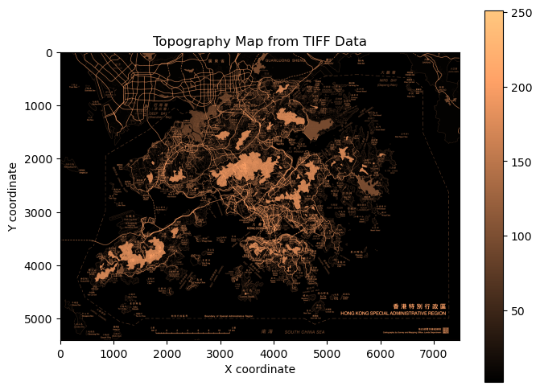

Code
# import library
import xarray as xr
import hvplot.xarray
import hvplot.pandas
import rasterio as rio
import rioxarray
from matplotlib import pyplot as plt# import library
import xarray as xr
import hvplot.xarray
import hvplot.pandas
import rasterio as rio
import rioxarray
from matplotlib import pyplot as plthttps://www.landsd.gov.hk/landsd_psi_data/SMO/image/B200K_R500index-geo.tif
# Get image and plot
topo_url = (
"https://www.landsd.gov.hk/landsd_psi_data/SMO/image/B200K_R500index-geo.tif")
topo_data = xr.open_dataset(topo_url, engine="rasterio")
#topo_map = topo_data.hvplot.image('x', 'y', width=700, height=500, cmap="copper", geo=True)An introductory map presents Hong Kong’s topography using a gradient color bar ranging from dark to light brown. This map effectively highlights the complexity of Hong Kong’s landscape, emphasizing the limited space available for development. It illustrates why there is a high population density in regions of low elevation, where people tend to gather, while the mountainous areas are less populated. This also demonstrates the significant risk of landslides in the event of heavy rainfall or storms, as well as the potential for rainwater accumulation in densely populated areas, posing a serious flood risks.
